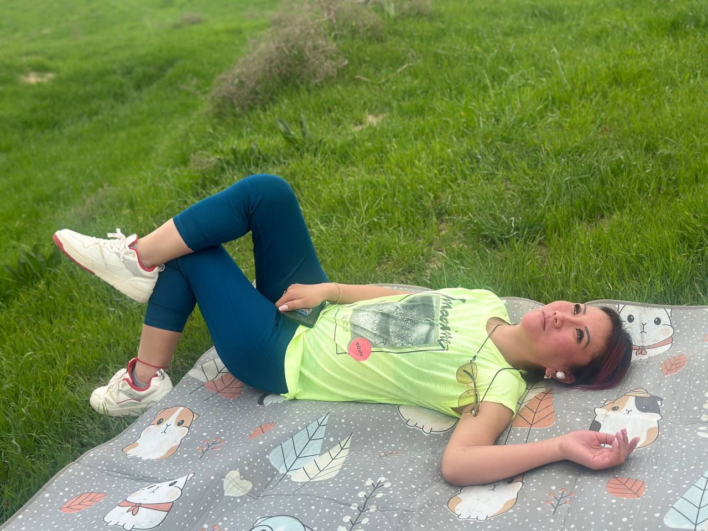

Татьяна Эдуардовна — мама Серикбая и женщина, которая сумела вырастить троих сыновей и при этом сохранить здравый смысл. Уже одно это достижение заслуживает отдельной награды.
За годы материнства Татьяна Эдуардовна научилась сохранять спокойствие практически в любой ситуации. В конце концов, после трёх сыновей человека уже сложно чем-либо удивить.

В душе Татьяна Эдуардовна остаётся очень чувствительным и ранимым человеком. Поэтому иногда её могут задеть вещи, на которые другие даже не обратят внимания.
Однако есть испытание, которое она всё-таки смогла преодолеть. Татьяна Эдуардовна одержала уверенную победу над климаксом и теперь может с гордостью сказать, что этот этап остался позади.
Татьяна Эдуардовна также известна тем, что в будущем имеет все шансы получить ещё один важный статус — свекровь автора данного сайта.
По этой причине количество шуток в её адрес было принято сократить до безопасного минимума. Всё-таки хорошие отношения нужно строить заранее.